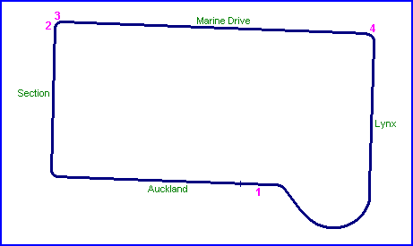
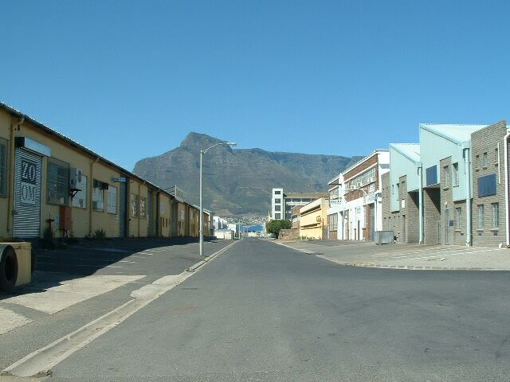
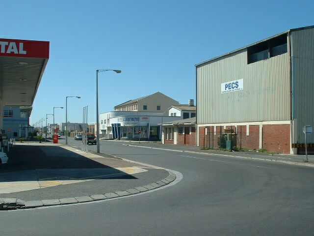
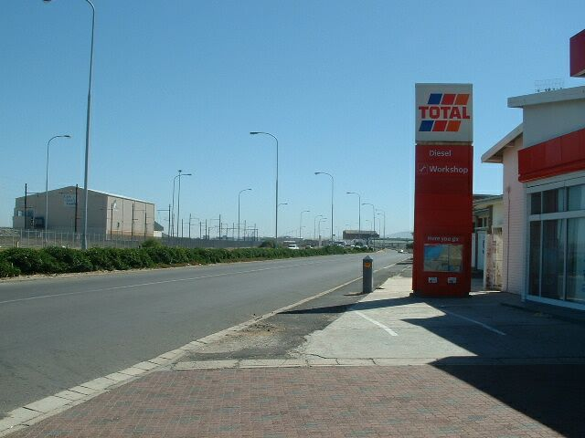
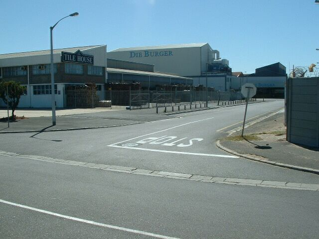

Paarden Eiland, South Africa
Type: Street Circuit
Length: 1.950 Miles / 3.138 km (later shortened to 1.8 miles)
Used: Late 1940's
Photographs Taken: January, 2004
Located in an Industrial Area 6 km NE of Cape Town City Center.
Numbers on the map indicate where the pictures were taken. See below to view the photographs.

Return to racingcircuits.net's Photo Archive Main Index

1) Start / Finish in Auckland Street (heading south
towards Section Street)

2) Exit of Section Street leading into Marine Drive.
(90° corner)

3) Looking down Marine Drive from exit at Section
Street. (90° corner)

4) View of Lynx Road from corner leading out of Marine
Drive.
Text & Graphics ©Marius Matthee. Reproduced here with kind permission.